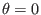
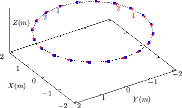

For the fully kinetic ion module of GEM code that I am developing,  is
chosen in the range
. The condition (290) imposes
the following boundary condition:
is
chosen in the range
. The condition (290) imposes
the following boundary condition:
If  is on a grid,
is usually not on a grid.
Therefore, to get the value of
, an
interpolation of the discrete date over the generalized toroidal angle
(or equivalently
is on a grid,
is usually not on a grid.
Therefore, to get the value of
, an
interpolation of the discrete date over the generalized toroidal angle
(or equivalently  ) is needed, as is shown in Fig.
18.
) is needed, as is shown in Fig.
18.
Figure 18:
Twenty magnetic field lines (on
magnetic surface) sarting at differnt toroidal angle (blue points) on the
midplane (
) go a full poloidal loop (i.e.,
), arriving at a toroidal angle (red points) which are different from
their respective starting toroidal angle. The field values on the red points
can be obtained by interpolating the field values on the blue points. The
safety factor of the magnetic surface . Magnetic field from EAST
discharge #59954@3.03s.
|
 |
yj
2018-03-09